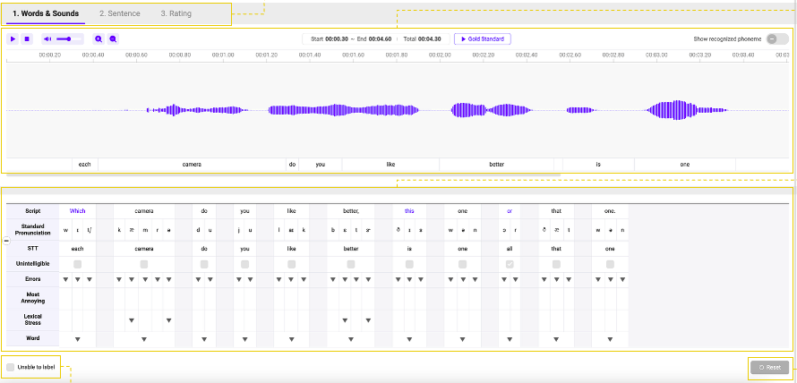

Human-in-the-loop AI Language Quality
Decision criteria for human review in AI evaluation systems.
Decision criteria for human review in AI evaluation systems.

Standards and quality criteria for AI-assisted localization.
Korean product language that feels natural and local.
Case Study
Standards that reduce inconsistency across AI-assisted localization outputs.
Guardrails keep language aligned with brand voice and local expectations at scale.
Fewer subjective calls and more consistent quality signals across outputs.